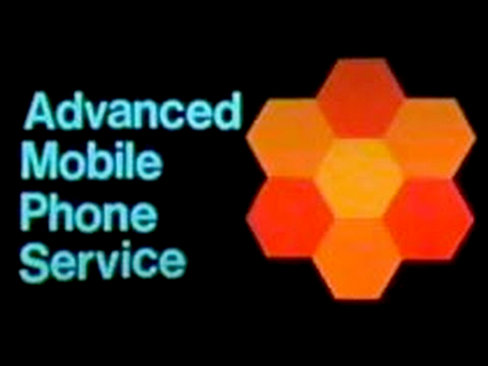
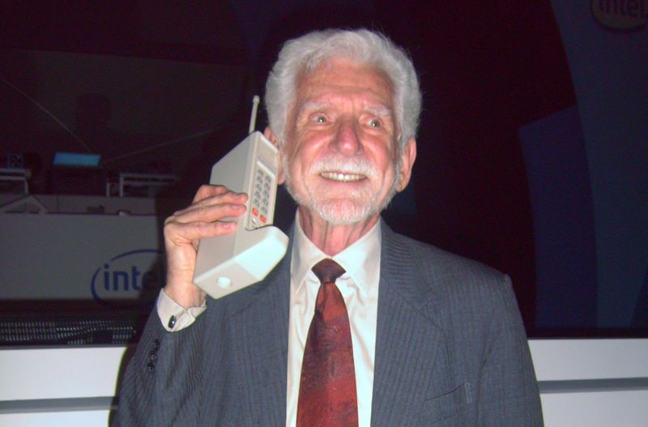

AMPS

History
*TBD*
The Advanced Mobile Phone Service (AMPS) was an analog cellular mobile phone system developed by Bell Labs.
From 1968 to 1983 the Bell Labs worked out the system, while Motorola was developing the cellular phone.
Dr. Martin Cooper produced the first handheld phone "DynaTAC8000x", the famous Brick Phone.

Image taken from Wikipedia
- Frequency range base station: 869.040 MHz - 893.970 MHz
- Frequency range mobile station: 824.040 MHz - 848.970 MHz
- Control channels: 21 for System A
- Voice channels: 395 for System A (formerly 312)
- Control channels: 21 for System B
- Voice channels: 395 for System B (formerly 312)
- Duplex distance: 45 MHz
- Channel spacing: 30 KHz
- Voice modulation: FM
- Signaling modulation: carrier FSK
- Frequency deviation: 8 KHz (FSK)
- Mobile station transmit power: 4 Watts (vehicular) 1.6 or 0.6 Watts
- Base station transmit power: ??? (around 50 Watts)
The detailed communication between base station and mobile station is described in TIA/EIA-553 standard.
Click for reading the PDF file.
Thanx to TIA for allowing me to add the standard document to this project's documentation.
Reproduced under written permission from Telecommunications Industry Association.
*TBD* SID and System A/B
To reduce radio noise, a syllabic compandor is used on both ends.
This compresses the audio level dynamics by 2.
An audio level of 25% is raised to 50% by the compressor and lowered to 25% by the expander.
A radio noise floor of 10% would be reduced to 1% by the expander.
Setup of a base station
Importaint: We need to connect to PLL and discriminator!
AMPS does not use a modulated tone to carry bits of information, instead it modulates the radio carrier directly.
This image shows a signal generated by this software, which is similar to a received signal from the phone:
Generally a receiver will do de-emphasis and filtering after demodulating the signal.
We don't want that.
It may work, but be sure to use a receiver with discriminator output.
This output gives direct signal of the frequency deviation of the received signal.
The signal on the sound card represents the frequency shift of the received signal.
Many receivers can be modified, so search the Web for more info.
On the transmitter we don't want to have filtering and pre-emphasis.
It may work, but be sure to use a transmitter that allows to disable emphasis.
I took the schematics of my transmitter and connected the sound card directly to the PLL.
The transmitter will now shift frequency according the the level of the sound card.
Importaint: We need to transmit correct polarity, use auto polarity detection always!
In my case, my sound card is connected to a transmitter, where a positive sample value causes a negative frequency deviation.
This is why I need to flip the polarity of the signal, so I generate a negative sample value that causes a positive frequency deviation.
I use the '-f yes' option or '--flip-polarity yes'.
Also it is essential to use a transmitter with direct access to the modulator and and a receiver with direct access to the disciminator.
I use '-p -d' or '--pre-emphasis --de-emphasis' to process emphasis for audio signal in software.
I use the calling channel (control channel) 334, which could also be used as traffic channel (voice channel).
# amps -k 334 -F yes -p -d
...
Selected System ID (SID) 40 belongs to:
Salinas, CA (GTE Mobile)
San Francisco, CA (GTE Mobile)
San Jose, CA (GTE Mobile)
San Rosa, CA (GTE Mobile)
Santa Barbara, CA (GTE Mobile)
amps.c:390 notice : You selected 'combined control & paging & voice channel'.
This is a hack, but the only way to use control channel and voice channel on one transceiver.
Some phones may reject this.
amps.c:481 info : Entering IDLE state, sending Overhead/Filler frames on combined control & paging
& voice channel.
Base station on channel 334 ready, please tune transmitter to 880.020 MHz and receiver to 835.020 MHz.
frame.c:3658 info : RX Level: 54% Quality: 66% Polarity: NEGATIVE
frame.c:3658 info : RX Level: 53% Quality: 65% Polarity: NEGATIVE
frame.c:3658 info : RX Level: 52% Quality: 60% Polarity: NEGATIVE
You should tune the receiver to 880.020 first, to check if you can hear and decode the idle signal from the base station.
Then tune to actually uplink frequency 835.020 MHz.
The actual level is not yet relevant.
(You may check the quality using '-l 2' or '--loopback 2' command line option and build a radio loop by tuning the receiver to the transmitter.)
If the polarity is correct and the volume of the signal (frequency deviation) is about right, you will make the phone register.
The phone will transmit on the uplink.
If not, try other polarity.
This is how my phone registers to my network:
frame.c:3630 info : RX RECC: DCC=0
frame.c:2990 info : Received: Word A - Abbreviated Address Word
frame.c:2990 info : Received: Word B - Extended Address Word
frame.c:2990 info : Received: Word C - Serial Number Word
amps.c:635 info : Registration 617XXXXXXX (ESN = 825b5f79, Class 6 / Discontinuous / 25 MHz)
transaction.c:175 info : Transaction state IDLE -> REGISTER ACK
transaction.c:98 info : Created transaction '617XXXXXXX' for subscriber 'REGISTER ACK'
amps.c:989 info : Sending Register acknowledge
transaction.c:175 info : Transaction state REGISTER ACK -> REGISTER ACK SEND
frame.c:2691 info : Transmit: Word 1 - Abbreviated Address Word
frame.c:2691 info : Transmit: Word 2 - Extended Address Word (SCC == 11)
frame.c:2691 info : Transmit: Word 1 - Abbreviated Address Word
frame.c:2691 info : Transmit: Word 2 - Extended Address Word (SCC == 11)
frame.c:2691 info : Transmit: Word 1 - Abbreviated Address Word
frame.c:2691 info : Transmit: Word 2 - Extended Address Word (SCC == 11)
transaction.c:117 info : Destroying transaction for subscriber '617XXXXXXX'
transaction.c:175 info : Transaction state REGISTER ACK SEND -> IDLE
frame.c:3630 info : RX RECC: DCC=0
frame.c:2990 info : Received: Word A - Abbreviated Address Word
frame.c:2990 info : Received: Word B - Extended Address Word
frame.c:2990 info : Received: Word C - Serial Number Word
frame.c:2990 info : Received: Word D - First Word of the Called-Address (Origination - Voice Service)
amps.c:653 info : Call 617XXXXXXX -> 5551212 (ESN = 825b5f79, Class 6 / Discontinuous / 25 MHz)
transaction.c:175 info : Transaction state IDLE -> CALL ASSIGN MOBILE ORIGINAT ING
transaction.c:98 info : Created transaction '617XXXXXXX' for subscriber 'CALLASSIGN MOBILE ORIGINATING'
amps.c:1003 info : Assigning channel to call from mobile station
transaction.c:175 info : Transaction state CALL ASSIGN MOBILE ORIGINATING ->
CALL ASSIGN MOBILE ORIGINATING SEND
frame.c:2691 info : Transmit: Word 1 - Abbreviated Address Word
frame.c:2691 info : Transmit: Word 2 - Extended Address Word (SCC != 11)
frame.c:2691 info : Transmit: Word 1 - Abbreviated Address Word
frame.c:2691 info : Transmit: Word 2 - Extended Address Word (SCC != 11)
frame.c:2691 info : Transmit: Word 1 - Abbreviated Address Word
frame.c:2691 info : Transmit: Word 2 - Extended Address Word (SCC != 11)
transaction.c:175 info : Transaction state CALL ASSIGN MOBILE ORIGINATING SEND -> CALL
amps.c:951 info : Staying on combined control + voice channel 334
amps.c:959 info : Setup call to network.
call.c:590 info : Incoming call from '617XXXXXXX' to '5551212'
dsp.c:678 notice : SAT level 72.31% quality 98%p)
dsp.c:678 notice : SAT level 78.63% quality 100%)
dsp.c:678 notice : SAT level 78.76% quality 100%)
amps.c:585 info : Detected SAT signal with quality=100.
dsp.c:678 notice : SAT level 78.66% quality 100%)
amps.c:525 info : Detected Signaling Tone with quality=100.
transaction.c:117 info : Destroying transaction for subscriber '617XXXXXXX'
transaction.c:175 info : Transaction state CALL -> IDLE
call.c:711 info : Call has been released with cause=16
amps.c:481 info : Entering IDLE state, sending Overhead/Filler frames on combined control & paging
& voice channel.
call.c:457 info : Outgoing call to 617XXXXXXX
amps.c:753 info : Call to mobile station, paging station id '617XXXXXXX'
transaction.c:175 info : Transaction state IDLE -> PAGE
transaction.c:98 info : Created transaction '617XXXXXXX' for subscriber 'PAGE'
amps.c:1025 info : Paging the phone
transaction.c:175 info : Transaction state PAGE -> PAGE SEND
frame.c:2691 info : Transmit: Word 1 - Abbreviated Address Word
frame.c:2691 info : Transmit: Word 2 - Extended Address Word (SCC == 11)
frame.c:2691 info : Transmit: Word 1 - Abbreviated Address Word
frame.c:2691 info : Transmit: Word 2 - Extended Address Word (SCC == 11)
frame.c:2691 info : Transmit: Word 1 - Abbreviated Address Word
frame.c:2691 info : Transmit: Word 2 - Extended Address Word (SCC == 11)
transaction.c:175 info : Transaction state PAGE SEND -> PAGE REPLY
frame.c:3658 info : RX Level: 60% Quality: 90% Polarity: POSITIVE
frame.c:3630 info : RX RECC: DCC=0
frame.c:2990 info : Received: Word A - Abbreviated Address Word
frame.c:2990 info : Received: Word B - Extended Address Word
frame.c:2990 info : Received: Word C - Serial Number Word
amps.c:655 info : Paging reply 617XXXXXXX (ESN = 825b5f79, Class 6 / Discontinuous / 25 MHz)
transaction.c:175 info : Transaction state PAGE REPLY -> CALL ASSIGN MOBILE TERMINATING
amps.c:1012 info : Assigning channel to call to mobile station
transaction.c:175 info : Transaction state CALL ASSIGN MOBILE TERMINATING ->
CALL ASSIGN MOBILE TERMINATING SEND
frame.c:2691 info : Transmit: Word 1 - Abbreviated Address Word
frame.c:2691 info : Transmit: Word 2 - Extended Address Word (SCC != 11)
frame.c:2691 info : Transmit: Word 1 - Abbreviated Address Word
frame.c:2691 info : Transmit: Word 2 - Extended Address Word (SCC != 11)
frame.c:2691 info : Transmit: Word 1 - Abbreviated Address Word
frame.c:2691 info : Transmit: Word 2 - Extended Address Word (SCC != 11)
transaction.c:175 info : Transaction state CALL ASSIGN MOBILE TERMINATING SEND ->
CALL ALERT MOBILE TERMINATING
amps.c:951 info : Staying on combined control + voice channel 334
frame.c:2691 info : Transmit: Mobile Station Control Message Word 1 (SCC == 11)
dsp.c:678 notice : SAT level 76.43% quality 98%
frame.c:2691 info : Transmit: Mobile Station Control Message Word 1 (SCC == 11)
dsp.c:678 notice : SAT level 77.44% quality 99%
frame.c:2691 info : Transmit: Mobile Station Control Message Word 1 (SCC == 11)
dsp.c:678 notice : SAT level 78.58% quality 99%
amps.c:585 info : Detected SAT signal with quality=99.
frame.c:2691 info : Transmit: Mobile Station Control Message Word 1 (SCC == 11)
dsp.c:678 notice : SAT level 79.75% quality 100%
amps.c:525 info : Detected Signaling Tone with quality=100.
call.c:646 info : Call is alerting
transaction.c:175 info : Transaction state CALL ALERT MOBILE TERMINATING ->
CALL ALERT MOBILE TERMINATING SEND
dsp.c:678 notice : SAT level 67.88% quality 98%
dsp.c:678 notice : SAT level 80.28% quality 99%
dsp.c:678 notice : SAT level 80.39% quality 99%
dsp.c:678 notice : SAT level 80.08% quality 100%
mps.c:527 info : Lost Signaling Tone signal
call.c:689 info : Call has been answered by '617XXXXXXX'
transaction.c:175 info : Transaction state CALL ALERT MOBILE TERMINATING SEND -> CALL
call.c:479 info : Call hangup
amps.c:836 info : Call has been released by network, releasing call.
amps.c:866 info : Call control releases on voice channel, releasing towards mobile station.
transaction.c:175 info : Transaction state CALL -> CALL RELEASE
amps.c:1048 info : Releasing call to mobile station
transaction.c:175 info : Transaction state CALL RELEASE -> CALL RELEASE SEND
frame.c:2691 info : Transmit: Mobile Station Control Message Word 1 (SCC == 11)
dsp.c:678 notice : SAT level 76.60% quality 100%
transaction.c:117 info : Destroying transaction for subscriber '617XXXXXXX'
transaction.c:175 info : Transaction state CALL RELEASE SEND -> IDLE
amps.c:481 info : Entering IDLE state, sending Overhead/Filler frames on combined control &
paging & voice channel.
[Back to main page]
|